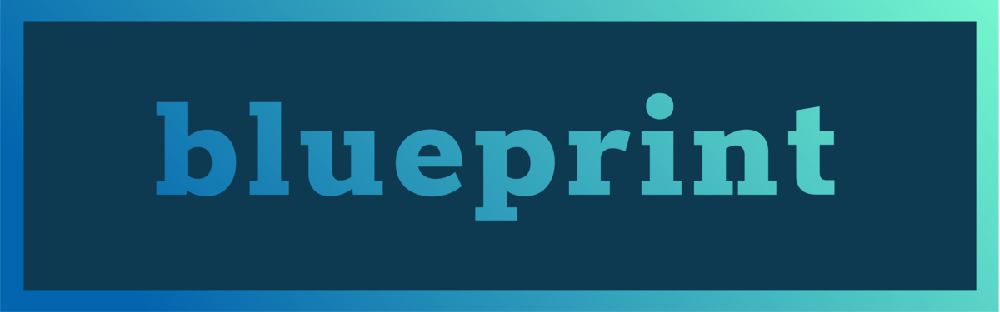

At MIT
AT MIT, I have been involved with various events hosted by the university.
This includes:
- Setting up and guiding participants for the Harvard-MIT Math Tournament (HMMT) - 2017
- Guiding students around campus for the Undergraduate Society of Women in Mathematics (USWIM) math competition, designed to encourage female students to explore STEM - 2017
Science Olympiad (Sci Oly) has been a large part of my high school experience, and I was ecstatic to proctor and grade for the Anatomy & Physiology event for Sci Oly at MIT - 2018
I also mentored students in the BluePrint Learnathon and Hackathon in February 2018. I helped middle school students through a tutorial of Python and answered their questions while they built their hacks!

The next month, I ran one of the registration desks for Spark, a program that provides engaging challenges and lessons for middle school students in the area - 2018
I was a mentor for a week-long summer program called DynaMIT. This student run program provides STEM activities and lessons for middle school students who come from low-income backgrounds. As a mentor, I led activities for my group of four students, worked with two students on a Scratch project, and co-led a presentation on Forensics - 2018